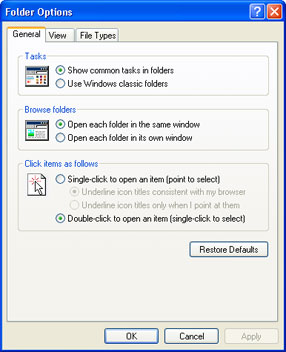
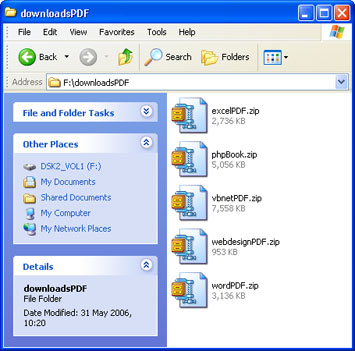
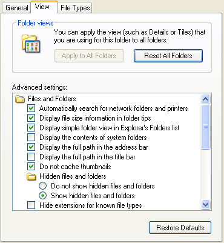
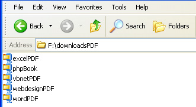
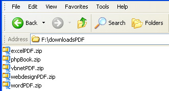
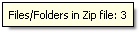
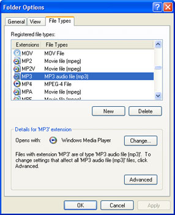
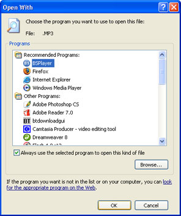

Free
computer Tutorials
|
Free
computer Tutorials
|
|
 home home |
Stay at Home and Learn | ||||
Windows XP Folder and File Options, Associate a Program with a File Type
This tutorial assumes that you have set the Control panel to Classic View. To see how to do this, click this link (opens in a new window): Set the Control Panel to Classic View
If you want to control how Folders operate on your PC, and files in folders, then the Control Panel icon you need is called, not surprisingly, Folders. There are some quite useful options here that you may want to set, and we'll see what they are now.
Click the Start button in the bottom left of your screen. From the Start menu, click Control Panel. Then double click the Folder Options icon to see the following screen:  There are three tabs on the Folder Options dialogue box: General, View and File Types.
General Folder OptionsThe image above shows the General Folder options you can set. The first one, tasks, sets how the Folder looks when you open it up. The two views are Show common tasks in folders, and Use Windows classic folders. The first one looks like this:  The Tasks pane is on the left, in blue. If you select Use Windows classic folders then this will disappear. The two Browse folders options do exactly what they say. If you choose to open the folders in a new window then when you double click a folder to see what's inside of it, you stay on the same screen. The other option is to open a new window every time you double click a folder. The Click items … option can speed things up a bit. If you choose this option then there's no more double clicking a folder to open it. Just point your mouse at a folder and then click just the once.
Folder Options - ViewWhen you click the View tab, you'll see the following screen:  There are some interesting options you may want set here. One that we recommend is the one at the bottom, in the image above: Hide extensions for known file types. If you check this box, your files will look like this:  But if you uncheck "Hide extensions for know file types" your files will look like this:  In this view, you can now see what type of file it is: a ZIP file, in this case. The three letters on the end, after the full stop, tell you this. We recommend you uncheck "Hide extensions for known file types", so that you can see what type of file you have downloaded, or are trying to open. (Be wary of files that end in EXE. These are the ones that you double click to install things. Some viruses and Trojans end in EXE as well. That's why you should scan all EXE files with you Anti Virus software before opening them. If you have the habit of simply double clicking every file on your PC, without realising what it is, then you're asking for trouble! Another useful option on the Advanced Settings list is "Show pop-up
description for folders and desktop items". When you have this
option checked you will see a little pop up, when you move your mouse
over a file or folder. It will look like this: 
File TypesThe File Types tab shows you which programme is used to open certain files. For example, if you double click an MP3 music file then it may automatically open in the Windows Media Player. If you'd rather have some other programme open up your MP3 files instead, you can change it from here. The File Types tab looks like this.  In the image above, we've clicked on MP3. This details section tells us that it is set to be opened with the Windows Media Player. There is a Change button that you can click to set this to another programme. The screen looks like this:  We've gone a free programme called BSPlayer. When OK is clicked, all our MP3 files will then open up in this programme. NOTE: If you double click a file and get an error message telling you that the programme associated with this file is missing, and XP can't open it, then it means that the Registered File Type needs resetting. Choose a new programme from the list of options above. Or click the Browse button to search for a programme.
<--Back One Page Move on to the Next Part--> |
|||||
|